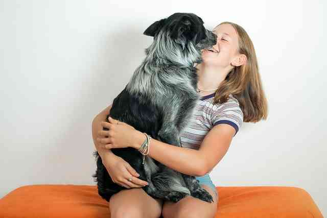
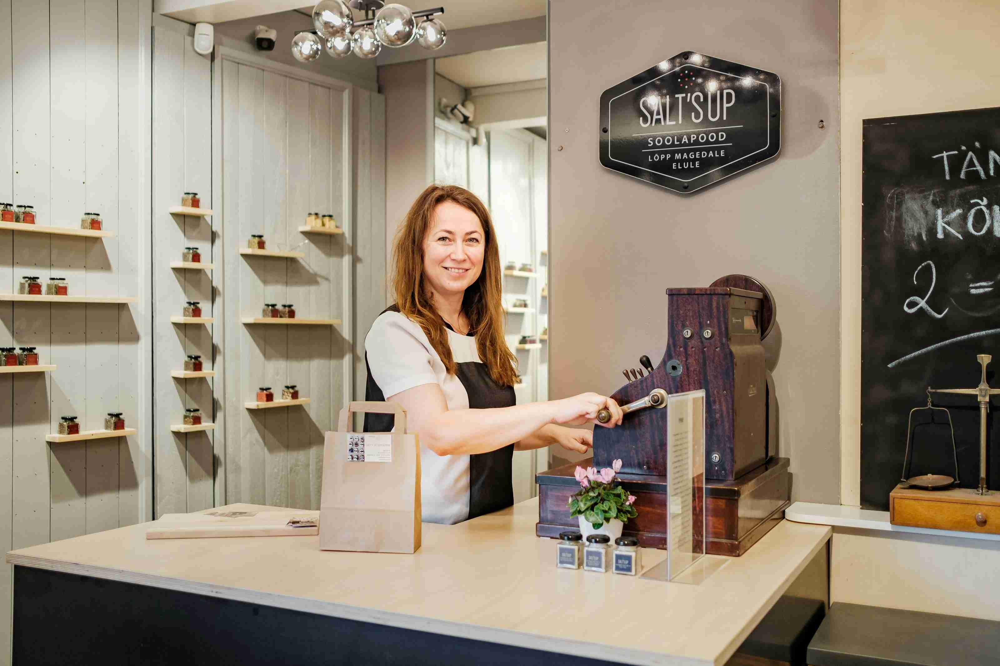
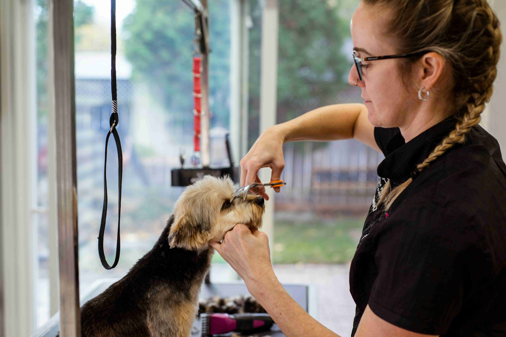
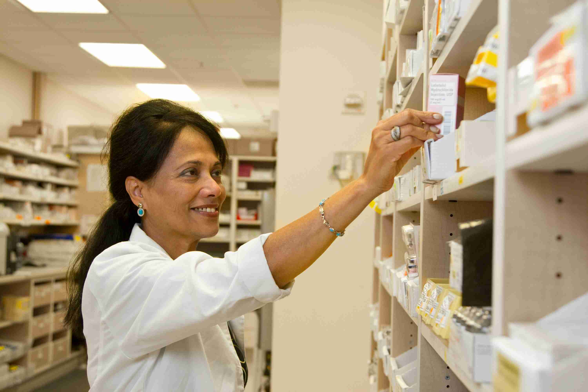

ペットが安心して暮らせるサポートをするプロになる
 アジャストペットファーストは、ペットの幸せな一生をサポートする、国内最大級のペットビジネスカンパニーです。 ペットが安心して暮らせる日常を実現するため、正しい知識と経験を持ちお客さまの求める商品・サービスを高い品質で提供します。 ペットが好きなだけでは、プロにはなれません。知識と技術と愛情で、ペットと人の「しあわせ」も「たいへん」も支えていく。 本気で向き合うあなたの挑戦をお待ちしております。
事業別採用
既卒・キャリア採用
店舗ではたらく
-
ショップスタッフ
ペットショップにて、ペットとお客さまとの出会いの架け橋となるお仕事です。清潔な店内を保ち、店舗で過ごすペットの健康管理に努めます。
-
トリマー
ペットサロン「Miss BIBI」をはじめ病院併設のトリミングサロン等、各トリミングサロンにて、ワンちゃんのトリミングおよびグルーミング(シャンプーや爪切りなどのお手入れ)をするお仕事です。※一部ペットサロンではネコちゃんのトリミングも実施しています。
-
ホテルスタッフ
お預かりしたワンちゃんネコちゃんが日常に近いリズムでストレスなく過ごせるよう気を配りながら、食事やお散歩などのお世話をするお仕事です。
ペットの健康を管理する
-
獣医師
すべてのサービスに動物医療が幅広く介在するペッツファーストにおいて、獣医師は特に重要なポジションです。動物病院グループ・ウェルネス管理センターでの勤務をはじめ、ブリーダーへの往診・ペットショップの往診巡回などさまざまな業務を担当いただきます。
-
動物看護師
ペッツファーストグループの動物病院をはじめ、ウェルネス管理センターでの動物看護師のお仕事です。高度な小児科医療と予防医療を経験できます。
-
健康管理スタッフ

ペットの健康を管理するお仕事です。ブリーダーから迎えたばかりの幼いペットの健康を守り、ペットショップで過ごしているときも常に健康でいられるよう管理を行います。
ビジネスで支える
-
お客様サポート
お客さまにペットをお迎えいただく前と、お迎えいただいたあと両方のサポートに関わる各種職種です。
-
経理
経理部門として会社の資金管理・運用をお任せします。
-
本部スタッフ
ペッツファーストグループの企業成長を支える各種職種です。営業・社内システム・事務・経理・人事などの募集をしています。
採用メッセージ
社員インタビュー
採用のお知らせ
-
2024.05.27
ALL
弊社出展イベントのご案内
-
2024.04.27
ALL
マイナビ主催合同説明会のイベントへの出店予定が決定いたしました。
-
2024.04.25
ALL
2025年3月卒業予定者の新卒採用/総合職コース募集を終了いたしました。
-
2024.02.29
ALL
2025年卒業予定者の2025年度新卒採用の2月・3月の説明会開催が決定いたしました。詳しくはマイページよりご確認ください。
-
2024.01.30
ALL
2026年卒業予定者向けのインターンシップおよび会社について、マイナビ2026に掲載開始されました。
お知らせ一覧